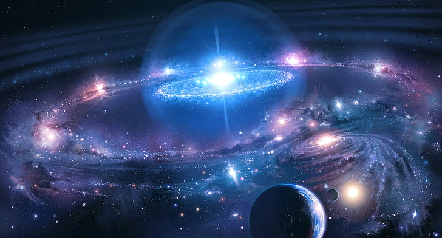

los viajes son hermosos
tu mismo controlas tu propio viaje sin rumbo fijo en el camino, somos minusculos ante todo
El cuerpo humano es vulnerable a condiciones de altitud en la atmósfera terrestre. La altitud donde la presión atmosférica coincide con la presión del vapor de agua se denomina: línea de Armstrong, en honor al médico estadounidense Harry G. Armstrong. Se ubica a una altitud de 19.14 km. Por encima de la línea los fluidos en la garganta y pulmones se evaporan
El espacio, la vasta extensión que se extiende más allá de la atmósfera de la Tierra, es un lugar de misterios y maravillas. Es un vacío oscuro, donde flotan estrellas, planetas, y galaxias, cada uno contando su propia historia de formación y evolución. En el espacio, las leyes de la física que conocemos en la Tierra se despliegan en formas sorprendentes, y a pesar de su aparente vacío, está lleno de energía, radiación, y la posibilidad de descubrir lo desconocido. Es el escenario final para la exploración humana y la búsqueda de respuestas sobre nuestro lugar en el universo.
obras de dios?
la naturaleza habla, quizas algo sea...
El espacio es un vasto vacío lleno de misterios, donde cada estrella podría albergar planetas, y cada galaxia contiene miles de millones de estrellas. Es un lugar donde el tiempo y el espacio se entrelazan, creando maravillas como agujeros negros, supernovas y nebulosas que iluminan la oscuridad infinita.
El espacio es un lienzo oscuro salpicado de luces que nos recuerdan lo pequeños que somos en el universo.